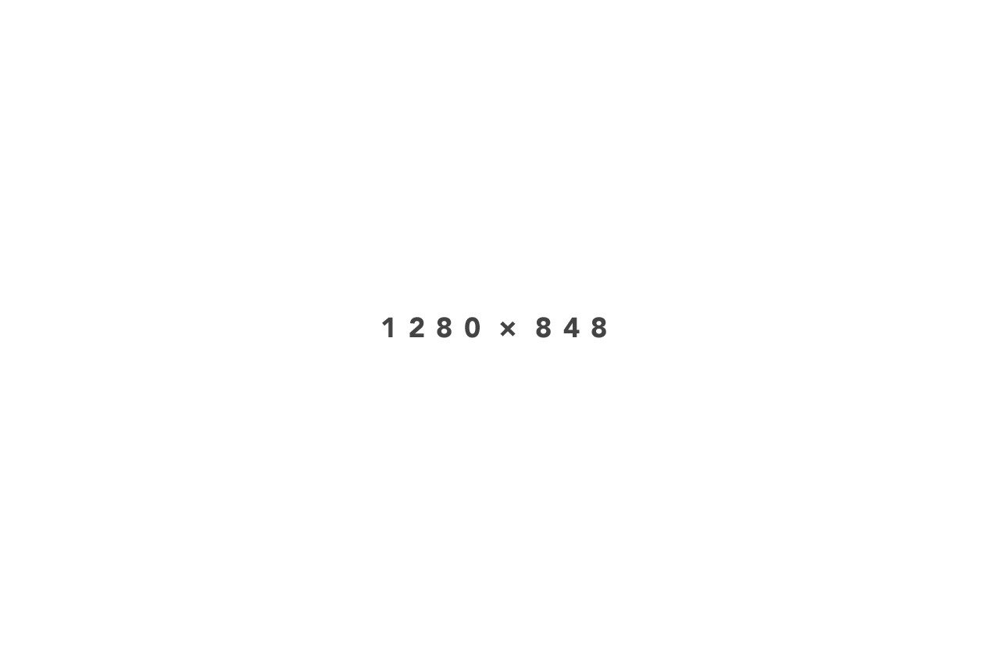

Owl Slider
Slider with big muscles
Path to the script:
css/owl.carousel.css
css/owl.theme.css
js/owl.carousel.min.js
You can make slider with almost every HTML element available. Here's one example. Code below.
<div data-role="none" id="slider" class="owl-carousel nightly-inline-slider">
<div data-role="none" class="item nightly-text-box align-center">
<h3 class="nightly-text-box-title">Text Box in Carousel</h3>
<p>Nunc et urna ullamcorper tortor eleifend pretium sit amet vel dui. Integer blandit ipsum in iaculis. Nam ultricies lectus.</p>
</div>
<div class="item">
<button data-role="none" class="nightly-circle"><i class='fa fa-align-center'></i></button>
<h3>Swipe me</h3>
<p>This slider works fine with any type of content.</p>
</div>
<div class='item nightly-alert nightly-alert-warning'>
<i class='fa fa-2x fa-warning fa-fw'></i>
<p>You can put here almost everything even warnings.</p>
</div>
</div>
Slide Gallery
You can easily create galleries with Owl Slider. Code below.


<div data-role="none" id="gallery" class="owl-carousel nightly-inline-gallery">
<img class="item" src="assets/image.jpg" alt="Image" />
<img class="item" src="assets/image.jpg" alt="Image" />
<img class="item" src="assets/image.jpg" alt="Image" />
</div>
NIGHTLY 2014. All rights reserved.